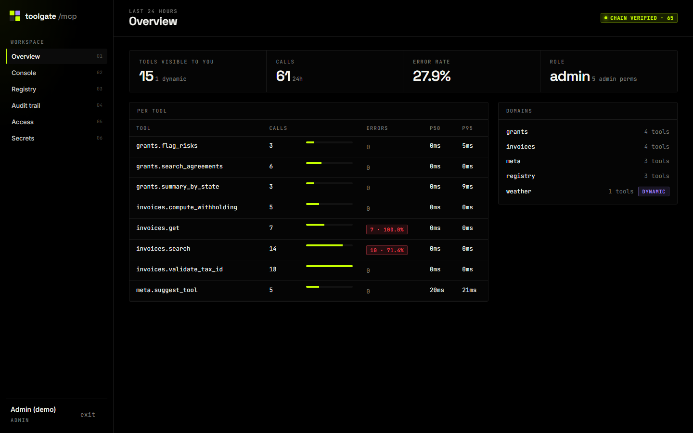

01 · governance
toolgate
mcp-tool-gateway ↗Who may call which tool, with which data — and can you prove it? One MCP server in front of every tool domain, where the stdio client, the web panel and backend services all pass through the same executor.
Quem pode chamar qual tool, com quais dados — e dá para provar? Um servidor MCP na frente de todos os domínios, em que cliente stdio, painel web e serviços passam pelo mesmo executor.
- Tools as data: JSON Schemas served live; an approved tool appears without restart
- Per-tool RBAC by glob; clients only see what they can call
- Dynamic HTTP tools with SSRF guards, secret references and four-eyes approval
- SHA-256 hash-chained audit trail over PII-masked events
- Tools como dados: JSON Schemas servidos ao vivo; tool aprovada aparece sem reiniciar
- Permissão por tool via globs; o cliente só vê o que pode chamar
- Tools HTTP dinâmicas com proteção a SSRF, secrets por referência e aprovação a quatro olhos
- Trilha de auditoria com cadeia de hashes SHA-256 sobre eventos mascarados
MCP 2.2FastAPIJSON SchemaFernetSQLite WALDocker
